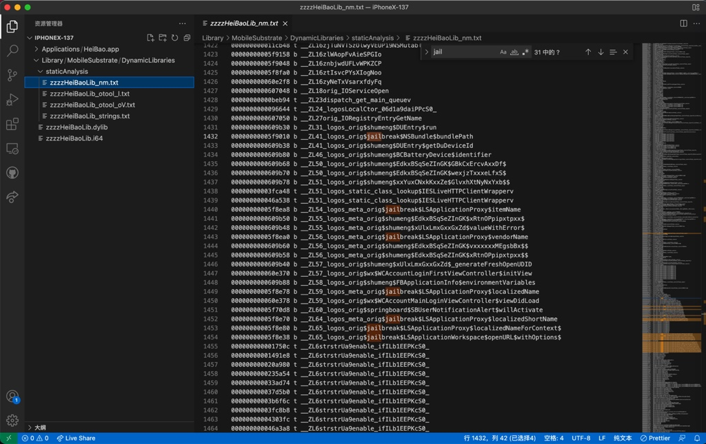

举例
HeiBao的dylib
对于二级制文件，此处是dylib的动态库：
➜ DynamicLibraries pwd
/Users/crifan/dev/DevRoot/Aweme/exportFromiPhone/iPhoneX-137/Library/MobileSubstrate/DynamicLibraries
➜ DynamicLibraries ll
total 152568
-rwxr-xr-x@ 1 crifan staff 6.2M 3 14 10:34 zzzzHeiBaoLib.dylib
-rw-r--r-- 1 crifan staff 68M 3 17 21:39 zzzzHeiBaoLib.i64
去导出字符串等资源：
➜ DynamicLibraries otool -l zzzzHeiBaoLib.dylib > HeiBaoLib_otool_l.txt
➜ DynamicLibraries otool -oV zzzzHeiBaoLib.dylib > HeiBaoLib_otool_oV.txt
➜ DynamicLibraries nm zzzzHeiBaoLib.dylib > HeiBaoLib_nm.txt
➜ DynamicLibraries strings zzzzHeiBaoLib.dylib > HeiBaoLib_strings.txt
➜ DynamicLibraries ll
total 153112
-rw-r--r-- 1 crifan staff 108K 3 21 10:00 HeiBaoLib_nm.txt
-rw-r--r-- 1 crifan staff 12K 3 21 10:00 HeiBaoLib_otool_l.txt
-rw-r--r-- 1 crifan staff 51K 3 21 10:00 HeiBaoLib_otool_oV.txt
-rw-r--r-- 1 crifan staff 89K 3 21 10:00 HeiBaoLib_strings.txt
-rwxr-xr-x@ 1 crifan staff 6.2M 3 14 10:34 zzzzHeiBaoLib.dylib
-rw-r--r-- 1 crifan staff 68M 3 17 21:39 zzzzHeiBaoLib.i64
后续即可去分析和搜索想要研究的值了。
比如：
搜索越狱 jailbreak 相关内容：

抖音的AwemeCore
jtool2 -h ../../../../已脱壳/v18.9.0/Payload/Aweme.app/Frameworks/AwemeCore.framework/AwemeCore
jtool2 -l ../../../../已脱壳/v18.9.0/Payload/Aweme.app/Frameworks/AwemeCore.framework/AwemeCore > AwemeCore_jtool2_l_list.txt
jtool2 -L ../../../../已脱壳/v18.9.0/Payload/Aweme.app/Frameworks/AwemeCore.framework/AwemeCore > AwemeCore_jtool2_L_library.txt
jtool2 -S ../../../../已脱壳/v18.9.0/Payload/Aweme.app/Frameworks/AwemeCore.framework/AwemeCore > AwemeCore_jtool2_S.txt
jtool2 --analyze ../../../../已脱壳/v18.9.0/Payload/Aweme.app/Frameworks/AwemeCore.framework/AwemeCore > AwemeCore_jtool2_analyze.txt
rabin2 -I ../../../../已脱壳/v18.9.0/Payload/Aweme.app/Frameworks/AwemeCore.framework/AwemeCore
rabin2 -i ../../../../已脱壳/v18.9.0/Payload/Aweme.app/Frameworks/AwemeCore.framework/AwemeCore > AwemeCore_rabin2_i.txt
rabin2 -E ../../../../已脱壳/v18.9.0/Payload/Aweme.app/Frameworks/AwemeCore.framework/AwemeCore > AwemeCore_rabin2_E.txt
rabin2 -l ../../../../已脱壳/v18.9.0/Payload/Aweme.app/Frameworks/AwemeCore.framework/AwemeCore > AwemeCore_rabin2_l.txt
rabin2 -z ../../../../已脱壳/v18.9.0/Payload/Aweme.app/Frameworks/AwemeCore.framework/AwemeCore > AwemeCore_rabin2_z.txt
rabin2 -s ../../../../已脱壳/v18.9.0/Payload/Aweme.app/Frameworks/AwemeCore.framework/AwemeCore > AwemeCore_rabin2_s.txt
rabin2 -S ../../../../已脱壳/v18.9.0/Payload/Aweme.app/Frameworks/AwemeCore.framework/AwemeCore > AwemeCore_rabin2_S_section.txt
MaskPro.dylib
➜ DynamicLibraries otool -l MaskPro.dylib > MaskProDylib/MaskProDylib_otool_l.txt
➜ DynamicLibraries otool -oV MaskPro.dylib > MaskProDylib/MaskProDylib_otool_oV.txt
➜ DynamicLibraries nm MaskPro.dylib > MaskProDylib/MaskProDylib_nm.txt
➜ DynamicLibraries strings MaskPro.dylib > MaskProDylib/MaskProDylib_strings.txt
期间遇到FAT=胖二进制的问题：
➜ DynamicLibraries jtool2 -h MaskPro.dylib > MaskProDylib/MaskProDylib_jtool2_h_header.txt
Fat binary, little-endian, 2 architectures: armv7, arm64
Select an architecture setting the ARCH= environment variable
解决办法：
➜ DynamicLibraries export ARCH=arm64
➜ DynamicLibraries jtool2 -h MaskPro.dylib > MaskProDylib/MaskProDylib_jtool2_h_header.txt
继续：
➜ DynamicLibraries jtool2 -l MaskPro.dylib > MaskProDylib/MaskProDylib_jtool2_l_list.txt
➜ DynamicLibraries jtool2 -L MaskPro.dylib > MaskProDylib/MaskProDylib_jtool2_L_library.txt
➜ DynamicLibraries jtool2 -S MaskPro.dylib > MaskProDylib/MaskProDylib_jtool2_S_symbol.txt
➜ DynamicLibraries jtool2 --analyze MaskPro.dylib > MaskProDylib/MaskProDylib_jtool2_analyze.txt
...
继续：
➜ DynamicLibraries rabin2 -I MaskPro.dylib > MaskProDylib/MaskProDylib_rabin2_I_identification.txt
➜ DynamicLibraries rabin2 -i MaskPro.dylib > MaskProDylib/MaskProDylib_rabin2_i_imports.txt
➜ DynamicLibraries rabin2 -E MaskPro.dylib > MaskProDylib/MaskProDylib_rabin2_E_exports.txt
➜ DynamicLibraries rabin2 -l MaskPro.dylib > MaskProDylib/MaskProDylib_rabin2_l_libraries.txt
➜ DynamicLibraries rabin2 -z MaskPro.dylib > MaskProDylib/MaskProDylib_rabin2_z_strings.txt
➜ DynamicLibraries rabin2 -s MaskPro.dylib > MaskProDylib/MaskProDylib_rabin2_s_symbols.txt
➜ DynamicLibraries rabin2 -S MaskPro.dylib > MaskProDylib/MaskProDylib_rabin2_S_sections.txt
Mask的dylib
对于一个二进制，此处是一个动态库文件Mask.dylib，想要导出字符串等资源，供后续分析。
- 典型的成套的做法 =
otool+nm+strings+jtool2+rabin2：
otool -l Mask.dylib > MaskDylib_otool_l.txt
otool -oV Mask.dylib > MaskDylib_otool_oV.txt
nm Mask.dylib > MaskDylib_nm.txt
strings Mask.dylib > MaskDylib_strings.txt
jtool2 -h Mask.dylib > MaskDylib_jtool2_h_header.txt
jtool2 -l Mask.dylib > MaskDylib_jtool2_l_list.txt
jtool2 -L Mask.dylib > MaskDylib_jtool2_L_library.txt
jtool2 -S Mask.dylib > MaskDylib_jtool2_S_symbol.txt
jtool2 --analyze Mask.dylib > MaskDylib_jtool2_analyze.txt
rabin2 -I Mask.dylib > MaskDylib_rabin2_I_identification.txt
rabin2 -i Mask.dylib > MaskDylib_rabin2_i_imports.txt
rabin2 -E Mask.dylib > MaskDylib_rabin2_E_exports.txt
rabin2 -l Mask.dylib > MaskDylib_rabin2_l_libraries.txt
rabin2 -z Mask.dylib > MaskDylib_rabin2_z_strings.txt
rabin2 -s Mask.dylib > MaskDylib_rabin2_s_symbols.txt
rabin2 -S Mask.dylib > MaskDylib_rabin2_S_sections.txt